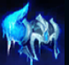
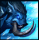
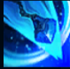
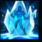
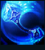

Sejuani
| Sejuani Fury Of The North | |
|---|---|
| Release date | 17.01.2012 |
| Class | Vanguard |
| Positions | Jungle |
| Resource | Mana |
| Range type | Melee |
| Adaptive type | Magic |
| Base statistics | |||
| Health | 560 – 2022 | Resource | N/A |
| Health regen. | 7.5 –15.55 |
Mana regen. | 8.176-20.08 |
| Armor | 33 – 99.75 | Attack damage | 64 – 115 |
| Magic resist. | 32 – 53.25 | Crit. damage | 175% |
| Move. speed | 340 | Attack range | 150 |
Sejuani este un vlăstar al gheții, brutala și neîndurătoarea războinică-mamă a Ghearei Iernii, unul dintre cele mai de temut triburi din Freljord. Pentru a supraviețui, poporul ei duce la nesfârșit o luptă disperată cu forțele naturii; ca să treacă de iernile grele, sunt forțați să jefuiască noxienii, demacienii și avarosanii. Călare pe Bristle, porcul ei mistreț drüvask, Sejuani conduce cele mai periculoase astfel de atacuri, folosindu-și buzduganul din gheață pură pentru a-și îngheța și zdrobi inamicii. |  |
FURIA NORDULUI După ce a fost în afara luptei, Sejuani primește ''Armura de gheață'', care îi oferă armură, rezistență la magie și imunitate la încetiniri. Efectul persistă pentru scurt timp după ce Sejuani suferă daune. Sejuani poate lovi un inamic amețit pentru a sparge gheața, provocându-i daune magice enorme. |
||
|---|---|---|---|---|
 |
ATAC ARCTIC Sejuani se năpustește înainte, aruncând în sus inamicii, și se oprește când lovește un campion inamic. | |||
 |
MÂNIA IERNII Sejuani își învârte buzduganul de două ori, provocând daune și aplicând cumuluri de ''Îngheț''. |
|||
|  |
MÂNIA IERNII Sejuani îngheață și amețește un campion inamic care are numărul maxim de cumuluri de ''Îngheț''. |
|||
 |
ÎNCHISOARE GLACIALĂ Sejuani își aruncă bola, înghețând și amețind primul campion lovit și creând o furtună de gheață care încetinește ceilalți inamici. |